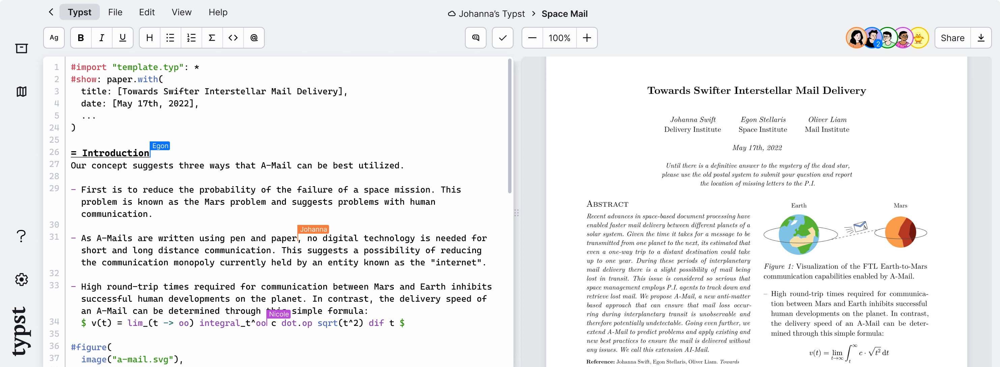
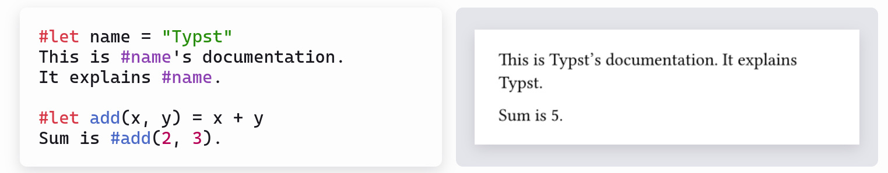

Inspiration

Alternative zu Latex
Erinnert an Markdown
Erlaubt Scripting:

Typst ist eine DSL
Idee: Hypst
Haskell basierte EDSL die das Verhalten von Typst imitiert
Aufbau
Infix Notation auf 'Dokument'
Deep Embedding
Pattern Matching für HTML Rendering